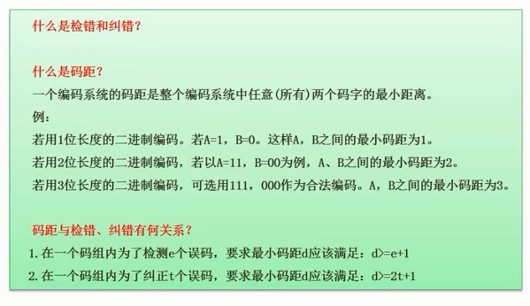

2.19 校验码的概念

检错
检查出错误
纠错
不但要检查出来，还得能够把它纠正
码距
任意2个码字的最小距离
码距的长度
假设同样传输2个编码，A和B。
- 当码距=1时，假设A=1，B=0。那么传输一段文字
ABABA，正确应该传输10101,但是此时我传了11111- 能检错吗？不能，因为1和0都是合法字符。
- 当码距=2时，假设A=11，B=00，那么同样传输一段文字
ABABA，正确应该传输11 00 11 00 11，那当我传了错误数据10 10 10 00 11给你- 能检错吗？可以，因为没有定义
10这种码 - 能纠错吗？不行，因为你不确定是
11->10还是00->10。2种都有可能
- 能检错吗？可以，因为没有定义
- 当码距=3时，假设A=111，B=000，那么同样传输一段文字
ABABA，正确应该传输111 000 111 000 111,当我传输了错误数据110 000 111 000 111给你- 能检错吗？可以，因为没有定义
100这种码 - 能纠错吗？可以，因为我们认为通信链路还是比较可靠的，不会出现错多位的情况。那么
000和AB2个码对比，就能纠正为111
- 能检错吗？可以，因为没有定义
总结规律
- 为了检错n个误码，最小码距应该 >= n+1
- 为了纠错n个误码，最小码距应该 >=2n+1